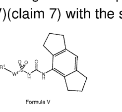

Patent Examination Benchmark Report
EP18826609.2 · SULPHONYL UREA DERIVATIVES AS NLRP3 INFLAMMASOME MODULATORS
来源 JSON：EP18826609-analysis.json
Application Preview
Claim Draft Preview
A compound of Formula (Iacl):
R3S
(R3s)0-2
(lac-1),
or a solvate,or pharmaceutically acceptable salt thereof, wherein:
R2 is -(CH2)n-R2s, wherein n is 0, 1, or 2, and R2s is 4- to 8-membered monocyclic
heterocycloalkyl optionally substituted with one or more Ci-C6 alkyl, C2-C6 alkenyl, C2-C6
alkynyl, C1-C6 haloalkyl, halo, -CN, -OH, -O(C1-C6 alkyl), -NH2, -NH(C1-C6 alkyl), -N(C1-C6
alkyl)2, or oxo; and
each R3s is independently Ci-C6 alkyl, Ci-Co haloalkyl, C3-Cs cycloalkyl, halo, or Cs-Cs
heterocycloalkyl is optionally substituted with -O(Ci-C6 alkyl),-N(Ci-C6 alkyl)2, halo, or -CN.
Draft claim 1 from claims review JSON; pages 1
Draft OCR claim only; verify against the authority PDF before using as legal text.
Review status: 0/12 verified · Authority PDF Claims review HTML Claims draft JSON
Markush / Formula

Links
- EPO Register Main
- EPO Register Documents
- Espacenet Search
- Local main HTMLEP18826609-main.html
- Local doclist CSVEP18826609-doclist.csv
Original Application Files
案件元数据
| 法域 | EP |
|---|---|
| 申请号 | EP18826609.2 |
| 发明名称 | SULPHONYL UREA DERIVATIVES AS NLRP3 INFLAMMASOME MODULATORS |
| 申请人 | Nodthera Limited |
| 申请日 | 2018-12-18 |
| 审查意见日期 | 2025-05-22 |
| 授权结果 | granted |
审查维度评分
| 维度/分数 | 字段描述 | 分析 | 原文 | 翻译 | LLM证据说明 |
|---|---|---|---|---|---|
新颖性 100 | 是否被单一现有技术直接公开，未被质疑通常为高分。 | 现有材料中没有看到针对Art.54新颖性的单一现有技术公开质疑；程序记录显示争议主要集中在inventive step和clarity。最终Decision to grant已明确授予欧洲专利，结合申请人回函中“claims on file are novel”的表述，当前可判断新颖性已获接受，风险很低。 | FollowingexaminationofEuropeanpatentapplicationNo.18826609.2aEuropeanpatentwiththetile and thesupportingdocuments indicatedinthecommunicationpursuant toRule71(3)EPC(EPOForm 2004C)orin theinformation(EPOForm 2004W,cf.Noticefrom theEPOdated8June2015,OJEPO 2015,A52) dated 14.01.25is hereby granted inrespect of the designated Contracting States. | 经审查欧洲专利申请第18826609.2号后，依据Rule 71(3) EPC通信中所述的文本及支持文件（EPO Form 2004C）或信息（EPO Form 2004W，参见EPO于2015年6月8日发布的通知，OJ EPO 2015，A52），该申请现已就指定缔约国获准授予欧洲专利。 | 该段来自最终授权决定，说明申请已通过审查并被授予专利；在可见材料中未见Art.54新颖性被单一现有技术直接、明确否定，因此支持新颖性维度高分。 |
创造性 80 | 按 EPO problem-solution/COMVIK 判断区别特征是否贡献技术效果。 | 从PSA看，EPO已将D1确认为最接近现有技术，并把当前权利要求1视为相对于D1通式化合物的选择发明。审查员在2024年仍认为该选择可能缺乏预期的技术效果，尤其担心比较数据不能覆盖全部范围；申请人则将claim 1收窄到与示例活性更一致的化合物，并主张比较数据对修正后的范围具有支持性。随后Rule 71(3)通知及最终授权表明，审查组已接受当前文本符合Articles 54 and 56 EPC。该案主要是技术化学结构选择问题，没有明显非技术特征，因此COMVIK逻辑不构成核心争点。当前创造性风险较低，但后续无效阶段仍可能围绕D1选择起点、比较数据外推性和整个范围的效果一致性提出挑战。 | Afterconsideringthelimitationsfromthesubject-matterclaimedbycurrentMR
procedure the subject-matted claimed by the MR filed on 22.11.2025 appears to
fulfiltherequirementsofArticles54and56EPC. | 在考虑了当前主请求所限定的主题内容后，2025年11月22日提交的主请求所要求保护的主题似乎符合《欧洲专利公约》第54条和第56条的要求。 | 这段原文直接表明审查组已认为当前请求满足56条创造性要求，说明经修改后创造性异议已被克服。 |
充分公开/支持 100 | 说明书是否足以实施，权利要求是否有原始公开和技术支撑。 | 审查记录中没有看到针对充分公开/支持或Art.123(2)的明确否定意见。相反，14.01.2025的Rule 71(3)沟通已将说明书和权利要求1-12列为拟授权文本，并在22.05.2025作出授权决定。早期答复中，申请人还明确说明若干权利要求修改有原申请基础，表明修改与原始公开存在对应支撑。虽然18.12.2024附件提到Art.84下说明书与权利要求一致性问题，但这属于清晰性/一致性而非充分公开，且未见持续的支持性异议。综合看，当前充分公开/支持风险很低。 | FollowingexaminationofEuropeanpatentapplicationNo.18826609.2aEuropeanpatentwiththetile and thesupportingdocuments indicatedinthecommunicationpursuant toRule71(3)EPC(EPOForm 2004C)orin theinformation(EPOForm 2004W,cf.Noticefrom theEPOdated8June2015,OJEPO 2015,A52) dated 14.01.25is hereby granted inrespect of the designated Contracting States. | 在审查欧洲专利申请第18826609.2号之后，依据Rule 71(3) EPC通信中所指明的文本和支持文件，或依据相关信息（EPO Form 2004W，参见EPO于2015年6月8日发布的通知，OJEPO 2015, A52），该欧洲专利现就所指定的缔约国授予。 | 该句表明审查后已直接授权，说明审查程序中未保留未解决的充分公开/支持问题；结合前序Rule 71(3)文本，反映最终授权文本已被接受。 |
清楚性 80 | 权利要求术语、边界、简洁性和 Art.84 问题。 | 审查中曾出现Article 84相关的清楚性/一致性问题，主要表现为权利要求1被申请人进一步限定以消除术语边界和前言基础问题；随后审查程序继续推进并最终授权，说明现行claim 1已被接受。当前风险主要只剩下历史上的说明书-权利要求一致性记录，未见仍会阻碍授权的明确清楚性缺陷。 | FollowingexaminationofEuropeanpatentapplicationNo.18826609.2aEuropeanpatentwiththetile and thesupportingdocuments indicatedinthecommunicationpursuant toRule71(3)EPC(EPOForm 2004C)orin theinformation(EPOForm2004W,cf.Noticefrom theEPOdated8June2015,OJEPO 2015,A52) dated 14.01.25is hereby granted inrespect of the designated Contracting States. | 经审查欧洲专利申请号18826609.2后，依据14.01.25通信中所指文件的文本，已就指定缔约国授予欧洲专利。 | 该原文来自最终授权决定，表明审查员最终接受了文本并授予专利，支持清楚性问题已被克服、当前维度风险较低。 |
适格性 100 | 是否落入 EP Art.52 排除主题，是否具有进一步技术效果。 | 从审查材料看，没有看到针对EP Art.52的排除主题异议；本案被最终授予欧洲专利，说明当前文本已通过可专利性审查。现有往来主要集中在创造性和清楚性修改，申请人也围绕这些问题提交了修订和论证，而不是围绕适格性进行实质争辩。因此，基于现有记录，适格性风险很低，后续若再被挑战，风险主要来自对“化合物/治疗用途”技术属性的抽象化解读，但现阶段授权结果已经提供了强支撑。 | Following examination of European patent applicationNo.18826609.2aEuropeanpatentwiththetile and thesupportingdocuments indicated in thecommunication pursuant toRule71(3)EPC(EPOForm 2004C)orin theinformation(EPOForm 2004W,cf.Noticefrom theEPOdated8June2015,OJEPO 2015,A52) dated 14.01.25is hereby granted inrespect of the designated Contracting States. | 经审查欧洲专利申请号18826609.2后，依据第71(3)规则通信中所示的文件以及信息（EPO Form 2004W，参见2015年6月8日EPO通知，OJ EPO 2015, A52）中所述文本，现就指定缔约国授予欧洲专利。 | 该原文直接表明该申请在审查后已被授予欧洲专利，说明未见足以阻碍授权的Art.52排除主题问题；因此适格性评分应为满分。 |
风险原因
- D1 (WO 2017/140778),which is regarded asbeing the closest prior art, discloses compounds of formula (l)(claim 1) or (V)(claim 7) with the same uses asthepresentones. Formulta (1) Thesubject-matterof currentclaim1can beconsideredasaselectionfrom the compounds of formulaI or V disclosed in D1(claims1and 7).D1（WO 2017/140778）被视为最接近的现有技术，其披露了具有与当前方案相同用途的式(l)（权利要求1）或式(V)（权利要求7）化合物。当前权利要求1的主题可被视为D1（权利要求1和7）所公开的式I或式V化合物中的一个选择。该段清楚给出PSA起点：D1是最接近现有技术，且当前权利要求被评价为对D1化合物的选择，直接支撑创造性争点的技术路线。
- Accordingly,thepreviously-discussed comparativedata supportsthe claimed scope of amended claim 1.Furthermore,given the ICso values for all exemplified compounds within the scope of amended claim 1, it is credible thatcompounds throughout the scope of the claim would possess the claimed improvement.因此，前述比较数据支持修正后权利要求1的保护范围。此外，鉴于落入修正后权利要求1范围内的所有实施例化合物的IC50数值，可以认为该权利要求范围内的化合物都可信地具有所主张的改进效果。这段体现了申请人用比较数据和缩小后的权利要求范围来回应创造性异议，核心是证明修正后的范围具有可预期的技术效果。
- FollowingexaminationofEuropeanpatentapplicationNo.18826609.2aEuropeanpatentwiththetile and thesupportingdocuments indicatedinthecommunicationpursuant toRule71(3)EPC(EPOForm 2004C)orin theinformation(EPOForm2004W,cf.Noticefrom theEPOdated8June2015,OJEPO 2015,A52) dated 14.01.25is hereby granted inrespect of the designated Contracting States.经审查欧洲专利申请第18826609.2号后，现就所指定缔约国授予一项欧洲专利，其文本为Rule 71(3) EPC沟通中所指明的文件以及信息文件（EPO Form 2004W，参见EPO于2015年6月8日发布的通知，OJ EPO 2015, A52）中所载内容，日期为14.01.25。最终授予直接表明审查程序已结束且授权文本被接受，作为创造性维度的强支撑证据。
- Afterconsideringthelimitationsfromthesubject-matterclaimedbycurrentMR procedure the subject-matted claimed by the MR filed on 22.11.2025 appears to fulfiltherequirementsofArticles54and56EPC.在考虑了当前主请求所限定的主题内容后，2025年11月22日提交的主请求所要求保护的主题似乎符合《欧洲专利公约》第54条和第56条的要求。这段原文直接表明审查组已认为当前请求满足56条创造性要求，说明经修改后创造性异议已被克服。
- Claim 1 has been amended to specifythat theCs-Ce aryl of Ris aphenyl substituted with two or three Ris. This amendment finds basis in paragraphs [0151] and [0153] of the application as filed. Claim1 hasbeenfurther amended tospecify that at least one Risis C-Csalkyl,Ci-Cshaloalkyl,orhalo. Claim 1 has alsobeen amended to specify that Rzs is a 4-to 8-membered monocyclic heterocycloalkyl. This amendment finds basis in paragraph[045] of the application as filed. Finally, claim 1 has been amended to fix the antecedent basis of "the C3-Cs monocyclic cycloalkyl, polycyclic cycloalkyl" by specifying that the C3-C16 cycloalkyl is a C3-Cg monocyclic cycloalkyl or polycyclic cycloalkyl.权利要求1已作修改，以明确R的Cs-Ce芳基为带有两个或三个R取代基的苯基；进一步明确至少一个R为C1-C6烷基、C1-C6卤代烷基或卤素；又明确Rzs为4至8元单环杂环烷基；最后通过将C3-C16环烷基限定为C3-C9单环环烷基或多环环烷基，修正了“the C3-Cs monocyclic cycloalkyl, polycyclic cycloalkyl”的前言基础。该段显示申请人对claim 1进行了具体限定并修正前言基础，直接对应EP Art.84所关心的术语边界与清楚性。
建议依据原文
- D1 (WO 2017/140778),which is regarded asbeing the closest prior art, discloses compounds of formula (l)(claim 1) or (V)(claim 7) with the same uses asthepresentones. Formulta (1) Thesubject-matterof currentclaim1can beconsideredasaselectionfrom the compounds of formulaI or V disclosed in D1(claims1and 7).D1（WO 2017/140778）被视为最接近的现有技术，其披露了具有与当前方案相同用途的式(l)（权利要求1）或式(V)（权利要求7）化合物。当前权利要求1的主题可被视为D1（权利要求1和7）所公开的式I或式V化合物中的一个选择。该段清楚给出PSA起点：D1是最接近现有技术，且当前权利要求被评价为对D1化合物的选择，直接支撑创造性争点的技术路线。
- Accordingly,thepreviously-discussed comparativedata supportsthe claimed scope of amended claim 1.Furthermore,given the ICso values for all exemplified compounds within the scope of amended claim 1, it is credible thatcompounds throughout the scope of the claim would possess the claimed improvement.因此，前述比较数据支持修正后权利要求1的保护范围。此外，鉴于落入修正后权利要求1范围内的所有实施例化合物的IC50数值，可以认为该权利要求范围内的化合物都可信地具有所主张的改进效果。这段体现了申请人用比较数据和缩小后的权利要求范围来回应创造性异议，核心是证明修正后的范围具有可预期的技术效果。
- FollowingexaminationofEuropeanpatentapplicationNo.18826609.2aEuropeanpatentwiththetile and thesupportingdocuments indicatedinthecommunicationpursuant toRule71(3)EPC(EPOForm 2004C)orin theinformation(EPOForm2004W,cf.Noticefrom theEPOdated8June2015,OJEPO 2015,A52) dated 14.01.25is hereby granted inrespect of the designated Contracting States.经审查欧洲专利申请第18826609.2号后，现就所指定缔约国授予一项欧洲专利，其文本为Rule 71(3) EPC沟通中所指明的文件以及信息文件（EPO Form 2004W，参见EPO于2015年6月8日发布的通知，OJ EPO 2015, A52）中所载内容，日期为14.01.25。最终授予直接表明审查程序已结束且授权文本被接受，作为创造性维度的强支撑证据。
- Afterconsideringthelimitationsfromthesubject-matterclaimedbycurrentMR procedure the subject-matted claimed by the MR filed on 22.11.2025 appears to fulfiltherequirementsofArticles54and56EPC.在考虑了当前主请求所限定的主题内容后，2025年11月22日提交的主请求所要求保护的主题似乎符合《欧洲专利公约》第54条和第56条的要求。这段原文直接表明审查组已认为当前请求满足56条创造性要求，说明经修改后创造性异议已被克服。
- Claim 1 has been amended to specifythat theCs-Ce aryl of Ris aphenyl substituted with two or three Ris. This amendment finds basis in paragraphs [0151] and [0153] of the application as filed. Claim1 hasbeenfurther amended tospecify that at least one Risis C-Csalkyl,Ci-Cshaloalkyl,orhalo. Claim 1 has alsobeen amended to specify that Rzs is a 4-to 8-membered monocyclic heterocycloalkyl. This amendment finds basis in paragraph[045] of the application as filed. Finally, claim 1 has been amended to fix the antecedent basis of "the C3-Cs monocyclic cycloalkyl, polycyclic cycloalkyl" by specifying that the C3-C16 cycloalkyl is a C3-Cg monocyclic cycloalkyl or polycyclic cycloalkyl.权利要求1已作修改，以明确R的Cs-Ce芳基为带有两个或三个R取代基的苯基；进一步明确至少一个R为C1-C6烷基、C1-C6卤代烷基或卤素；又明确Rzs为4至8元单环杂环烷基；最后通过将C3-C16环烷基限定为C3-C9单环环烷基或多环环烷基，修正了“the C3-Cs monocyclic cycloalkyl, polycyclic cycloalkyl”的前言基础。该段显示申请人对claim 1进行了具体限定并修正前言基础，直接对应EP Art.84所关心的术语边界与清楚性。
证据链
| 受影响权利要求 | 1 |
|---|---|
| 审查轮次 | 4 |
引用先文 / 官网相关专利
| 序号 | 引用/相关专利 | 来源标记 | LLM证据说明 |
|---|---|---|---|
| 1 | WO2017140778 | Examined text examined_text | Extracted from verified patent publication references in the benchmark input. |
说明书/支持证据
| 议题 | 位置/来源 | 原文 | 翻译 | LLM证据说明 |
|---|---|---|---|---|
| support_disc | FollowingexaminationofEuropeanpatentapplicationNo.18826609.2aEuropeanpatentwiththetile and thesupportingdocuments indicatedinthecommunicationpursuant toRule71(3)EPC(EPOForm 2004C)orin theinformation(EPOForm 2004W,cf.Noticefrom theEPOdated8June2015,OJEPO 2015,A52) dated 14.01.25is hereby granted inrespect of the designated Contracting States. | 在审查欧洲专利申请第18826609.2号之后，依据Rule 71(3) EPC通信中所指明的文本和支持文件，或依据相关信息（EPO Form 2004W，参见EPO于2015年6月8日发布的通知，OJEPO 2015, A52），该欧洲专利现就所指定的缔约国授予。 | 该句表明审查后已直接授权，说明审查程序中未保留未解决的充分公开/支持问题；结合前序Rule 71(3)文本，反映最终授权文本已被接受。 | |
| 24-08-2023_Reply_to_communication_from_the_Examining_Division_LLPBV12P2VFCNKM_ocr.txt | Claim 1 has been amended to specifythat theCs-Ce aryl of Ris aphenyl substituted with two or three Ris. This amendment finds basis in paragraphs [0151] and [0153] of the application as filed. Claim1 hasbeenfurther amended tospecify that at least one Risis C-Csalkyl,Ci-Cshaloalkyl,orhalo. Claim 1 has alsobeen amended to specify that Rzs is a 4-to 8-membered monocyclic heterocycloalkyl. This amendment finds basis in paragraph[045] of the application as filed. | 权利要求1已修改为：R的Cs-Ce芳基为带有两个或三个R基取代的苯基。该修改以原申请第[0151]和[0153]段为依据。权利要求1还进一步修改为：至少一个R基为C1-C5烷基、C1-C5卤代烷基或卤素。权利要求1还修改为：Rzs为4至8元单环杂环烷基。该修改以原申请第[045]段为依据。 | 这是申请人对权利要求修改所作的明确原始公开依据说明，直接对应Art.123(2)/support审查要点，表明修改并非无基础添加。 |
审查材料证据
| 议题 | 位置/来源 | 原文 | 翻译 | LLM证据说明 |
|---|---|---|---|---|
| novelty | 22-05-2025_Decision_to_grant_a_European_patent_MAQ0WGCZ13NTH8W_ocr.txt | FollowingexaminationofEuropeanpatentapplicationNo.18826609.2aEuropeanpatentwiththetile and thesupportingdocuments indicatedinthecommunicationpursuant toRule71(3)EPC(EPOForm 2004C)orin theinformation(EPOForm 2004W,cf.Noticefrom theEPOdated8June2015,OJEPO 2015,A52) dated 14.01.25is hereby granted inrespect of the designated Contracting States. | 经审查欧洲专利申请第18826609.2号后，依据Rule 71(3) EPC通信中所述的文本及支持文件（EPO Form 2004C）或信息（EPO Form 2004W，参见EPO于2015年6月8日发布的通知，OJ EPO 2015，A52），该申请现已就指定缔约国获准授予欧洲专利。 | 授权决定表明该申请已通过实质审查流程；在所给材料中没有单一现有技术对claim 1作出新颖性否定。 |
| novelty | 07-10-2022_Reply_to_communication_from_the_Examining_Division_L8YNFQZTDQBW27X_ocr.txt | We are pleased tonote that the Examinerhas recognised that theclaims onfileare novel.The Examinerhas,however,objected that the subject matter of the claims onfilelacks an inventive step in view of D1. | 我们很高兴注意到审查员已认可现有权利要求具有新颖性。审查员不过是认为现有权利要求相对于D1缺乏创造性。 | 该段虽来自申请人陈述，但清楚显示当时程序争点在创造性而非新颖性，支持新颖性未被单独否定。 |
| inventive_step | 27-06-2024_Annex_to_the_communication_LXT2DYZO1Y1CL6T_ocr.txt | D1 (WO 2017/140778),which is regarded asbeing the closest prior art,
discloses compounds of formula (l)(claim 1) or (V)(claim 7) with the same uses
asthepresentones.
Formulta (1)
Thesubject-matterof currentclaim1can beconsideredasaselectionfrom the
compounds of formulaI or V disclosed in D1(claims1and 7). | D1（WO 2017/140778）被视为最接近的现有技术，其披露了具有与当前方案相同用途的式(l)（权利要求1）或式(V)（权利要求7）化合物。当前权利要求1的主题可被视为D1（权利要求1和7）所公开的式I或式V化合物中的一个选择。 | 该段清楚给出PSA起点：D1是最接近现有技术，且当前权利要求被评价为对D1化合物的选择，直接支撑创造性争点的技术路线。 |
| inventive_step | 24-08-2023_Reply_to_communication_from_the_Examining_Division_LLPBV12P2VFCNKM_ocr.txt | Accordingly,thepreviously-discussed comparativedata supportsthe claimed scope of amended claim
1.Furthermore,given the ICso values for all exemplified compounds within the scope of amended
claim 1, it is credible thatcompounds throughout the scope of the claim would possess the claimed
improvement. | 因此，前述比较数据支持修正后权利要求1的保护范围。此外，鉴于落入修正后权利要求1范围内的所有实施例化合物的IC50数值，可以认为该权利要求范围内的化合物都可信地具有所主张的改进效果。 | 这段体现了申请人用比较数据和缩小后的权利要求范围来回应创造性异议，核心是证明修正后的范围具有可预期的技术效果。 |
| inventive_step | 22-05-2025_Decision_to_grant_a_European_patent_MAQ0WGCZ13NTH8W_ocr.txt | FollowingexaminationofEuropeanpatentapplicationNo.18826609.2aEuropeanpatentwiththetile
and thesupportingdocuments indicatedinthecommunicationpursuant toRule71(3)EPC(EPOForm
2004C)orin theinformation(EPOForm2004W,cf.Noticefrom theEPOdated8June2015,OJEPO
2015,A52) dated 14.01.25is hereby granted inrespect of the designated Contracting States. | 经审查欧洲专利申请第18826609.2号后，现就所指定缔约国授予一项欧洲专利，其文本为Rule 71(3) EPC沟通中所指明的文件以及信息文件（EPO Form 2004W，参见EPO于2015年6月8日发布的通知，OJ EPO 2015, A52）中所载内容，日期为14.01.25。 | 最终授予直接表明审查程序已结束且授权文本被接受，作为创造性维度的强支撑证据。 |
| support | 24-08-2023_Reply_to_communication_from_the_Examining_Division_LLPBV12P2VFCNKM_ocr.txt | Claim 1 has been amended to specifythat theCs-Ce aryl of Ris aphenyl substituted with two or three Ris. This amendment finds basis in paragraphs [0151] and [0153] of the application as filed. Claim1 hasbeenfurther amended tospecify that at least one Risis C-Csalkyl,Ci-Cshaloalkyl,orhalo. Claim 1 has alsobeen amended to specify that Rzs is a 4-to 8-membered monocyclic heterocycloalkyl. This amendment finds basis in paragraph[045] of the application as filed. | 权利要求1已修改为：R的Cs-Ce芳基为带有两个或三个R基取代的苯基。该修改以原申请第[0151]和[0153]段为依据。权利要求1还进一步修改为：至少一个R基为C1-C5烷基、C1-C5卤代烷基或卤素。权利要求1还修改为：Rzs为4至8元单环杂环烷基。该修改以原申请第[045]段为依据。 | 这是申请人对权利要求修改所作的明确原始公开依据说明，直接对应Art.123(2)/support审查要点，表明修改并非无基础添加。 |
| support | 22-05-2025_Decision_to_grant_a_European_patent_MAQ0WGCZ13NTH8W_ocr.txt | FollowingexaminationofEuropeanpatentapplicationNo.18826609.2aEuropeanpatentwiththetile and thesupportingdocuments indicatedinthecommunicationpursuant toRule71(3)EPC(EPOForm 2004C)orin theinformation(EPOForm 2004W,cf.Noticefrom theEPOdated8June2015,OJEPO 2015,A52) dated 14.01.25is hereby granted inrespect of the designated Contracting States. | 在审查欧洲专利申请第18826609.2号之后，依据Rule 71(3) EPC通信中所指明的文本和支持文件，或依据相关信息（EPO Form 2004W，参见EPO于2015年6月8日发布的通知，OJEPO 2015, A52），该欧洲专利现就所指定的缔约国授予。 | 最终授权决定表明审查机关已接受最终文本，未留下未克服的支持/充分公开缺陷。 |
| clarity | 24-08-2023_Reply_to_communication_from_the_Examining_Division_LLPBV12P2VFCNKM_ocr.txt | Claim 1 has been amended to specifythat theCs-Ce aryl of Ris aphenyl substituted with two or three Ris. This amendment finds basis in paragraphs [0151] and [0153] of the application as filed. Claim1 hasbeenfurther amended tospecify that at least one Risis C-Csalkyl,Ci-Cshaloalkyl,orhalo. Claim 1 has alsobeen amended to specify that Rzs is a 4-to 8-membered monocyclic heterocycloalkyl. This amendment finds basis in paragraph[045] of the application as filed. Finally, claim 1 has been amended to fix the antecedent basis of "the C3-Cs monocyclic cycloalkyl, polycyclic cycloalkyl" by specifying that the C3-C16 cycloalkyl is a C3-Cg monocyclic cycloalkyl or polycyclic cycloalkyl. | 权利要求1已作修改，以明确R的Cs-Ce芳基为带有两个或三个R取代基的苯基；进一步明确至少一个R为C1-C6烷基、C1-C6卤代烷基或卤素；又明确Rzs为4至8元单环杂环烷基；最后通过将C3-C16环烷基限定为C3-C9单环环烷基或多环环烷基，修正了“the C3-Cs monocyclic cycloalkyl, polycyclic cycloalkyl”的前言基础。 | 该段显示申请人对claim 1进行了具体限定并修正前言基础，直接对应EP Art.84所关心的术语边界与清楚性。 |
| clarity | 14-01-2025_Communication_about_intention_to_grant_a_European_patent_M5QOWNYD1Q6S6C9_ocr.txt | Page3:Article84EPC Page 169:Embodiment nolongercovered by (amended) claims(Art.84EPC) See also the comments in enclosed EPO Form 2906. | 第3页：Article84EPC；第169页：实施例已不再被（修改后的）权利要求覆盖（Art.84 EPC）。另见随附EPO Form 2906中的意见。 | 该段表明在授权前仍有Article 84相关的说明书/权利要求一致性调整需求，但并非对最终权利要求文字的否定，说明问题已通过修改处理。 |
| eligibility | 22-05-2025_Decision_to_grant_a_European_patent_MAQ0WGCZ13NTH8W_ocr.txt | Following examination of European patent applicationNo.18826609.2aEuropeanpatentwiththetile and thesupportingdocuments indicated in thecommunication pursuant toRule71(3)EPC(EPOForm 2004C)orin theinformation(EPOForm 2004W,cf.Noticefrom theEPOdated8June2015,OJEPO 2015,A52) dated 14.01.25is hereby granted inrespect of the designated Contracting States. | 经审查欧洲专利申请号18826609.2后，依据第71(3)规则通信中所示的文件以及信息（EPO Form 2004W，参见2015年6月8日EPO通知，OJ EPO 2015, A52）中所述文本，现就指定缔约国授予欧洲专利。 | 该连续原文显示申请已经通过审查并被授予，足以支持没有Art.52适格性障碍的结论。 |